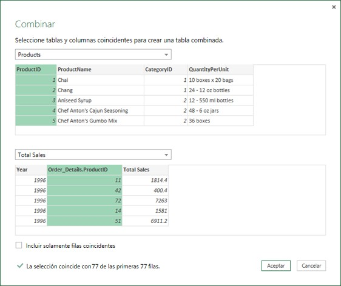

El asistente de programación
Cuando montamos una reunión si no queremos que la mayoría de los asistentes la rechacen por falta de disponibilidad podemos acceder al asistente de programación que nos permite ver la disponibilidad de los asistentes en la fecha y hora programada para la reunión.


Para poder ver el calendario de los otros asistentes es necesario que estos tengan visible el calendario pero sin necesidad de mostrar el detalle de sus ocupaciones.
Los calendarios en una organización se muestran visibles por parte del administrador del dominio.